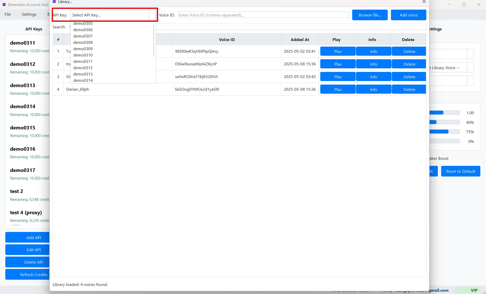

Sử dụng Giọng nói từ Thư viện Cục bộ khi Tạo TTS
Một trong những tính năng tiện lợi của ElevenLabs Account Hub là khả năng lưu trữ thông tin về các giọng nói từ Thư viện Giọng nói Công cộng của ElevenLabs vào một "Thư viện Cục bộ" (Local Library) ngay trong phần mềm. Sau khi đã thêm các giọng nói yêu thích vào thư viện cục bộ, bạn có thể dễ dàng chọn và sử dụng chúng để tạo giọng nói mà không nhất thiết phải thêm chúng vào danh sách "My Voices" trên tài khoản ElevenLabs của mình (giúp tiết kiệm "slot" trong VoiceLab của bạn).
1. Chọn Giọng nói từ Thư viện Cục bộ trong Bảng Cài đặt TTS
Khi bạn đang ở trong một tab TTS (Cột Giữa) và muốn sử dụng một giọng nói đã được lưu vào thư viện cục bộ của phần mềm:
- Nhìn sang Bảng Cài đặt (Settings Panel) ở Cột Phải.
- Tìm đến danh sách thả xuống (combo box) có nhãn "Library Voice" (hoặc "Giọng nói Thư viện").  (Hình ảnh: Danh sách thả xuống "Library Voice" trong Bảng Cài đặt TTS)
- Nhấp vào danh sách thả xuống này. Nó sẽ hiển thị tên của tất cả các giọng nói mà bạn đã thêm vào Thư viện Cục bộ trước đó.
- Chọn giọng nói bạn muốn sử dụng từ danh sách này. Tên của giọng nói được chọn sẽ hiển thị trong ô.
2. Cơ chế Ưu tiên khi Lựa chọn Giọng nói
Trong Bảng Cài đặt TTS, bạn có hai cách chính để chọn giọng nói:
- Danh sách "Voice": Chứa các giọng nói được tải trực tiếp từ API của Khóa API đang hoạt động (bao gồm các giọng nói mặc định của ElevenLabs và các giọng nói trong "My Voices" trên tài khoản ElevenLabs của bạn).
- Danh sách "Library Voice": Chứa các giọng nói bạn đã lưu vào Thư viện Cục bộ của phần mềm.
Phần mềm áp dụng cơ chế ưu tiên như sau:
- Khi bạn chọn một giọng nói từ danh sách "Library Voice", lựa chọn giọng nói trong danh sách "Voice" (nếu có) sẽ tự động bị bỏ chọn (hoặc được đặt về một giá trị mặc định như "--- Chọn Giọng nói API ---"). Phần mềm sẽ ưu tiên sử dụng giọng nói từ Thư viện Cục bộ.
- Ngược lại, nếu bạn chọn một giọng nói từ danh sách "Voice" (từ API), lựa chọn trong danh sách "Library Voice" sẽ tự động được đặt lại về mục placeholder (ví dụ: "--- Chọn từ Thư viện ---"). Phần mềm sẽ ưu tiên sử dụng giọng nói từ API.
Điều này đảm bảo rằng tại một thời điểm, chỉ có một nguồn giọng nói (hoặc từ API/My Voices, hoặc từ Thư viện Cục bộ) được chọn và sẽ được sử dụng khi bạn tạo TTS.
3. Sử dụng Giọng nói từ Thư viện Cục bộ để Tạo Âm thanh
- Sau khi đã chọn một giọng nói từ danh sách "Library Voice" trong Bảng Cài đặt, bạn có thể tiếp tục tùy chỉnh các tham số TTS khác (như Mô hình, Tốc độ, Độ ổn định, v.v.) như bình thường.
- Nhập văn bản bạn muốn chuyển đổi vào ô TTS trong Cột Giữa.
- Nhấn nút "Generate Audio".
- Phần mềm sẽ sử dụng Voice ID của giọng nói bạn đã chọn từ Thư viện Cục bộ để gửi yêu cầu tạo giọng nói đến máy chủ của ElevenLabs. Yêu cầu này sẽ được thực hiện thông qua Khóa API đang hoạt động của tab TTS đó.
- Vẫn tiêu tốn Tín dụng: Việc sử dụng một giọng nói từ Thư viện Cục bộ vẫn tiêu tốn tín dụng của Khóa API đang được chọn cho tab TTS đó, tương tự như khi bạn sử dụng một giọng nói trực tiếp từ "My Voices" của tài khoản ElevenLabs. Thư viện Cục bộ chỉ giúp bạn quản lý và chọn lựa giọng nói một cách tiện lợi hơn trong phần mềm; nó không cung cấp giọng nói miễn phí hoặc không giới hạn.
- Thư viện Cục bộ chỉ lưu trữ Thông tin: Thư viện Cục bộ trong ElevenLabs Account Hub chỉ lưu trữ thông tin tham chiếu về giọng nói (như Voice ID, tên, mô tả, nhãn). Yêu cầu tạo giọng nói thực tế vẫn được gửi đến và xử lý bởi máy chủ của ElevenLabs.
- Khóa API phải có quyền truy cập: Khóa API bạn đang sử dụng để tạo TTS phải có quyền truy cập vào Voice ID của giọng nói bạn chọn từ thư viện cục bộ. Hầu hết các giọng nói trong thư viện công cộng của ElevenLabs đều có thể được sử dụng bởi bất kỳ Khóa API nào.
4. Lợi ích của việc Sử dụng Giọng nói từ Thư viện Cục bộ
- Tiện lợi và Nhanh chóng: Dễ dàng truy cập và sử dụng lại các giọng nói yêu thích từ thư viện công cộng của ElevenLabs mà không cần phải tìm kiếm lại mỗi lần hoặc thêm tất cả chúng vào danh sách "My Voices" trên từng tài khoản ElevenLabs (điều này có thể bị giới hạn bởi gói tài khoản của bạn).
- Tổ chức Bộ sưu tập Giọng nói Cá nhân: Giúp bạn xây dựng và quản lý một bộ sưu tập các giọng nói ưa thích ngay trong phần mềm, dễ dàng tìm kiếm và áp dụng.
- Sử dụng Nhất quán trên Nhiều Khóa API: Bạn có thể dễ dàng sử dụng cùng một giọng nói từ Thư viện Cục bộ cho nhiều Khóa API khác nhau mà không cần phải "Add to My Voices" cho từng tài khoản ElevenLabs tương ứng.
- Tiết kiệm "Slot" trong My Voices (VoiceLab): Vì bạn không cần thêm mọi giọng nói yêu thích vào "My Voices" trên máy chủ ElevenLabs, bạn có thể dành các "slot" đó cho những giọng nói bạn thực sự muốn nhân bản hoặc tùy chỉnh sâu.
Sử dụng Thư viện Cục bộ là một cách hiệu quả để mở rộng đáng kể lựa chọn giọng nói của bạn, vượt ra ngoài những gì có sẵn trong "My Voices" của từng tài khoản ElevenLabs cụ thể, đồng thời giúp quy trình làm việc của bạn trở nên linh hoạt và hiệu quả hơn.